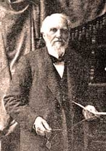

Crozier renounced the 1844 "shut door"
O. R. L. (Owen Russell Loomis) Crozier 1820-1913.
Most Seventh-day Adventists today (2002) do not know about O.R.L. Crozier, much less how he formed the "sanctuary doctrine" and published it in the Day Star February 7, 1846, pp. 38-44. [Crozier also spelled his name as Crosier.] Ellen G. White heartily endorsed Crozier's meaning of the "cleansing of the sanctuary."
EGW: "The Lord shew me in vision, more than one year ago, that Brother Crosier had the true light, on the cleansing of the Sanctuary, &c; and that it was his will, that Brother C. should write out the view which he gave us in the Day-Star Extra, February 7, 1846. I feel fully authorized to recommend that Extra to every saint." A Word to the Little Flock, p. 12. April 21, 1847.
What to look for in Crozier's refuting 1899 statement that follows this note
- Crozier repudiated his early beliefs on the Shut Door and the Sanctuary and published its defects from 1847-1849.
- He makes it clear he was not the originator of the sanctuary shut door view, and the credit goes to William Miller who received this idea from others. Miller also rejected the Shut door view.
- The reason Ellen G. White and others grasped Crozier's view is best described by Crozier himself. "On account of our ignorance of the scriptures my argument was more fully and more widely accepted than it deserved to be."
- Note Crozier's points for rejecting his former views.
Crozier's refutation of his former February 7, 1846, beliefs was published in 1899, in the Sabbath Advocate.The Sabbath Advocate was the forerunner of the Bible Advocate, published by the Church of God Seventh Day.
'The Entrance of thy Words giveth Light.'
W. C. LONG, Editor.
CONTRIBUTING EDITORS.
S. S. DAVISON, A. F. DUGGER, A. C. LONG, JACOB BRINKERHOFF, J. A. NUGENT.
STANBERRY, MO., MARCH 7, 1899.
Dear Bro. Long: -I herewith enclose you a letter from Bro. O. R. L. Crozier, which speaks for itself. However, I will add that I have known Bro. Crozier by reputation from my boyhood; and having a work in course of preparation on the Visions, Sanctuary, and Shut-door, etc., and as many of the Seventh-day Adventists of to-day do not seem to know that their people taught in their early writings (these writings being suppressed or ingeniously explained away,) that the door of mercy was closed in 1844; and knowing that Bro. Crozier had been identified with them in their early history, and therefore had a correct knowledge of their early teaching, I therefore wrote him for a statement of facts in the case to place in my book, not intending at the time to publish it in the ADVOCATE; but its I have been sick all winter, and am still confined to my room, and not knowing when I shall be able to do any literary work of any kind, I therefore send it to you for insertion in the paper. This short introductory and Bro. Crozier's letter are submitted in the interest of truth, through which we are to be sanctified and saved. A. F. D.
ANN ARBOR, MICH., Feb. 20, 1899.
Mr. A. F. Dugger, Bassett, Neb.:
Dear Brother: —Answering your esteemed favor of the 3rd inst,-I was born Feb. 2, 1820. I have received and answered many such letters as yours on the same subjects. It is unfortunate that many good people are unwilling to correct their mistakes. Denying them, covering them up, explaining around them, is not so honorable, not so Christian, as acknowledging them. A candid confession,—"I was mistaken,"—is a spiritual tonic.
The visions you speak of, having been a cheap and powerful means of financial and party success, the temptation to defend and encourage them has been very strong. Having known their history quite well for fifty-thee years, I have always believed their inspiration to be entirely human, seldom unselfish, and often false as to facts, and obviously unscriptural as to doctrine.
I did not "originate their present sanctuary view." The facts in the case are—William Miller deserves the credit for shut-doorism among the Advent people; and he got the idea from some of the most learned commentators of the "orthodox" churches. I am not aware that either he or they built it upon the sanctuary service. They inferred it chiefly from passages in the New Testament. Mr. Miller expressed his opinion that the door of mercy would be closed in 1838. When "the 10th day of the 7th month" time passed in the fall of 1844, he and others (with few exceptions,) who were interested in that midnight cry, as they called it, believed that the door of mercy was then shut,—that no more sinners would or could be converted. That opinion prevailed in 1845 and 1846. In the latter year I published in an Extra of The Day Star, a paper published by Enoch Jacobs, at Cincinnati, an exposition of the Sanctuary and its Service in the law of Moses, to explain how and why the door of mercy was shut. On account of our ignorance of the Scriptures my argument was more fully and more widely accepted than it deserved to be. In the next three years ('47-49) I saw and published its defects as to the shut door. They were:
- There is no proof that the processes of repentance and pardon were suspended on the Day of Atonement.
- "His mercy endureth forever." It is presumption to limit God's mercy. The bar does not come from God's side, but from man's side.
- Jesus never refused pardon to anyone repenting and asking for it.
- There is Scripture proof that there will be pardon and salvation under the reign of Christ—for the left of the nations, after the second coming. This, chiefly , brought me out of the shut-door.
- Out of it, we can see that the shut-door conception is crude, gross, narrow, puerile.
You ask, "Did you hold to the shut-door theory, that salvation was past, and that there was no more pardon for sinners?" I did.
"And did . . . the author of the visions, and those who believed them, adopt these views?" They did; and were among the first to declare them and the most persistent in retaining and publishing them; and what is more, they must still hold those views, because they still adhere to my sanctuary exposition, which was written to prove the shut-door. They even make (or did make a few years ago,) a foolish excuse for the conversions that have occurred since the fall of 1844, viz., that the names of those millions of converts were borne into the holy of holies on the breastplate of the high priest on the 10th day of the 7th month in that year—most of them yet unborn! There was no hint of any such thing in the type. The first shut-door believers put the issue on higher and more obvious ground, viz., that the Lord would very soon come—was actually on his way, some said,—and the world would be immediately destroyed. But as he did not come, and as conversions could not be prevented, nor denied even under the labors of shut-door believers, the names of future converts on the breastplate was a Yankee invention to suit the emergency. But, in the type, the names of the twelve tribes—not the names of all faithful individuals —were on the breastplate.
In the love of the truth, in the blessed hope, and in the precious work of the gospel,
Crozier documents Ellen G. White and the "Shut Door."
New and Important
- Ellen G. White and the Chicago Buildings Vision Fiascoby Kerry B. Wynne: Ellen White's Chicago Buildings Vision was her most spectacular prophetic blunder. [PDF]
- Doctors Bacchiocchi, MacCarty, and DuPreez Wreak Havoc With the Sabbath and Ellen Whiteby Kerry Wynne, William Hohmann, Robert K. Sanders: This book is for those who wish to study the anti-Sabbatarian content of the New Testament as a supplement to our other three books. [PDF]
Other Important Online Materials
- A Critic Answers Uncomfortable Questions by William Hohmann: New August 1, 2012—Response to the challenge on The Adventist Defense League Blog Site [PDF]
- Sabbath Not A Law For Christians: Answers many arguments Sabbath keepers make
- Is the SDA Church a Cult? The Clear Word Bibleby Robert K. Sanders [PDF]
Robert K. Sanders, Founder and Editor of Truth or Fables, 1997–2012
Life Assurance Ministries assumed ownership of Truth or Fables in 2012
© 2016 Life Assurance Ministries. All rights reserved.